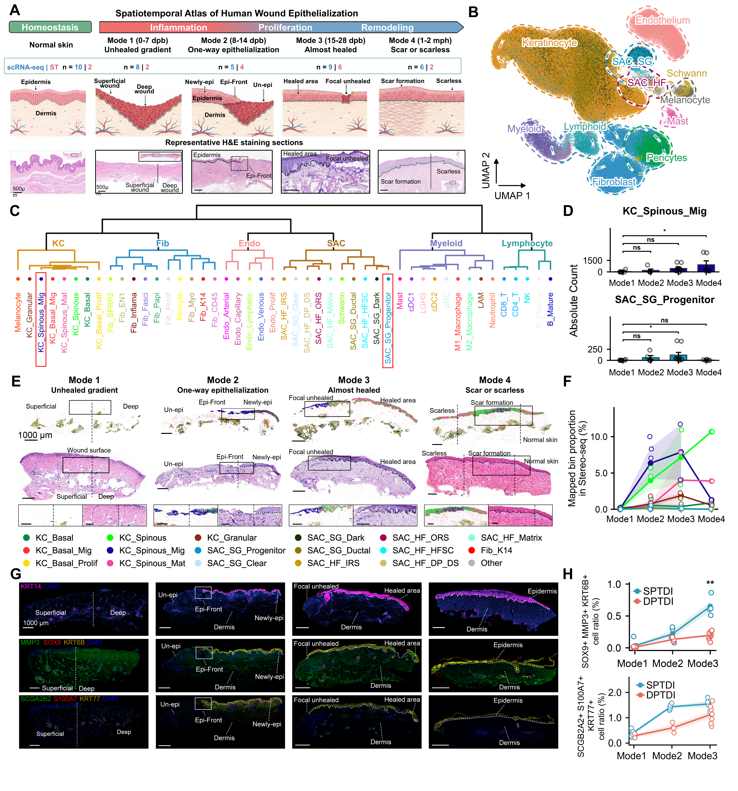

Clinical repair modes, cellular taxonomy, epithelial and appendage states, and spatial organization.
Executed supporting analyses and/or archived sources; see panel-specific status
Source data · Panel manifest · Execution report

| Panel | Description | Status |
|---|---|---|
| 1A | (A) Study design and representative hematoxylin and eosin (H&E) images for normal skin and four wound-repair modes. The schematic associates Mode 1 with an unhealed gradient, Mode 2 with advancing epithelialization, Mode 3 with near-complete coverage, and Mode 4 with healed scar or scarless tissue. Displayed scRNA-seq sample counts total 38. Spatial datasets comprise 11 human Stereo-seq sections and two Visium sections. Mode 1 is an unhealed shallow-to-deep gradient; Mode 2 contains directional epithelial advancement; Mode 3 contains focal incomplete closure; and Mode 4 represents covered remodeling tissue with scar or hyperplasia and adjacent scarless tissue. Morphological modes are recorded separately from sampling time. Sample aliases and source identifiers are listed in Table S1. H&E scale bars, 500 μm. | not_run |
| 1B | (B) Uniform manifold approximation and projection (UMAP) of the human single-cell atlas, colored by major cell compartment. | partial |
| 1C | (C) Hierarchical organization of 47 annotated cell states, including KC_Spinous_Mig and SAC_SG_Progenitor. KC, keratinocyte; SAC, skin appendage cell; SG, sweat gland; HF, hair follicle. | partial |
| 1D | (D) Recovered KC_Spinous_Mig and SAC_SG_Progenitor cell counts across Modes 1–4. | partial |
| 1E | (E) Spatially mapped epithelial and appendage states, corresponding H&E images, and magnified regions across the four repair modes. Overview scale bars, 1,000 μm. | not_run |
| 1F | (F) Proportions of mapped epithelial and appendage-associated bins in Stereo-seq sections across repair modes. | not_run |
| 1G | (G) Multiplex immunofluorescence across repair modes showing KRT14/DAPI, MMP3/SOX9/KRT6B/DAPI, and SCGB2A2/S100A7/KRT77/DAPI. The displayed channel keys specify pseudocolors. Overview scale bars, 1,000 μm. | not_run |
| 1H | (H) Marker-positive fractions for SOX9/MMP3/KRT6B and SCGB2A2/S100A7/KRT77 combinations across Modes 1–3, stratified by superficial and deep partial-thickness dermal injury (SPTDI, cyan; DPTDI, red). | not_run |